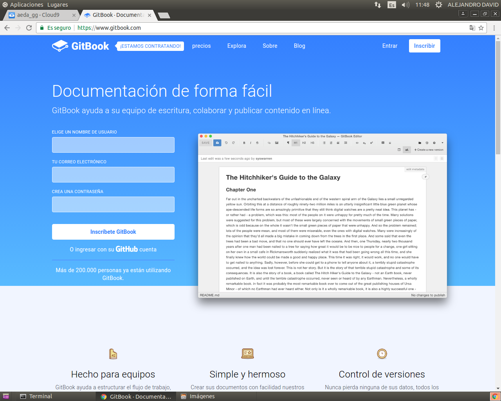
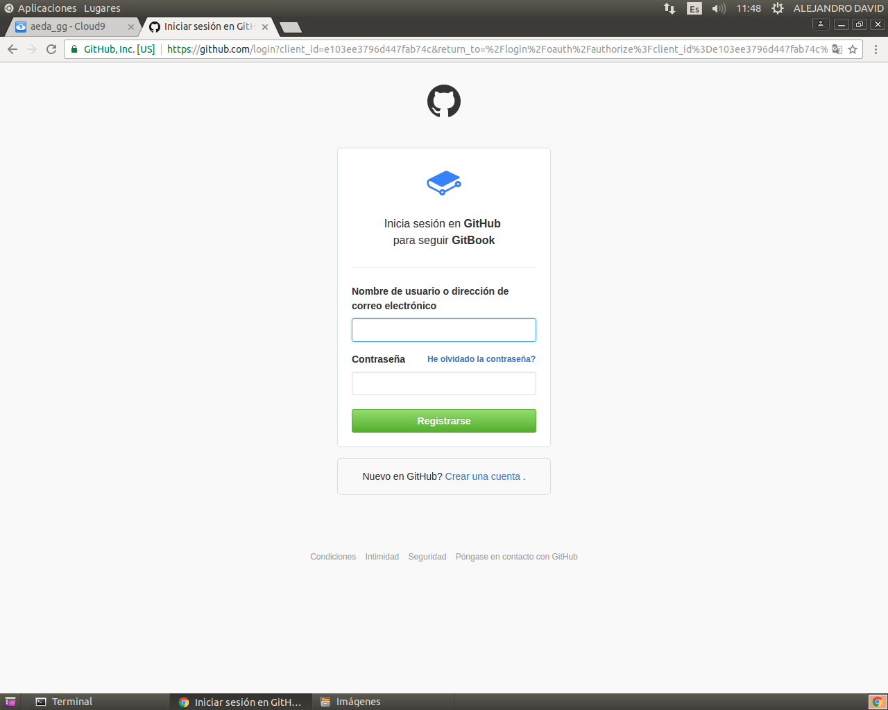
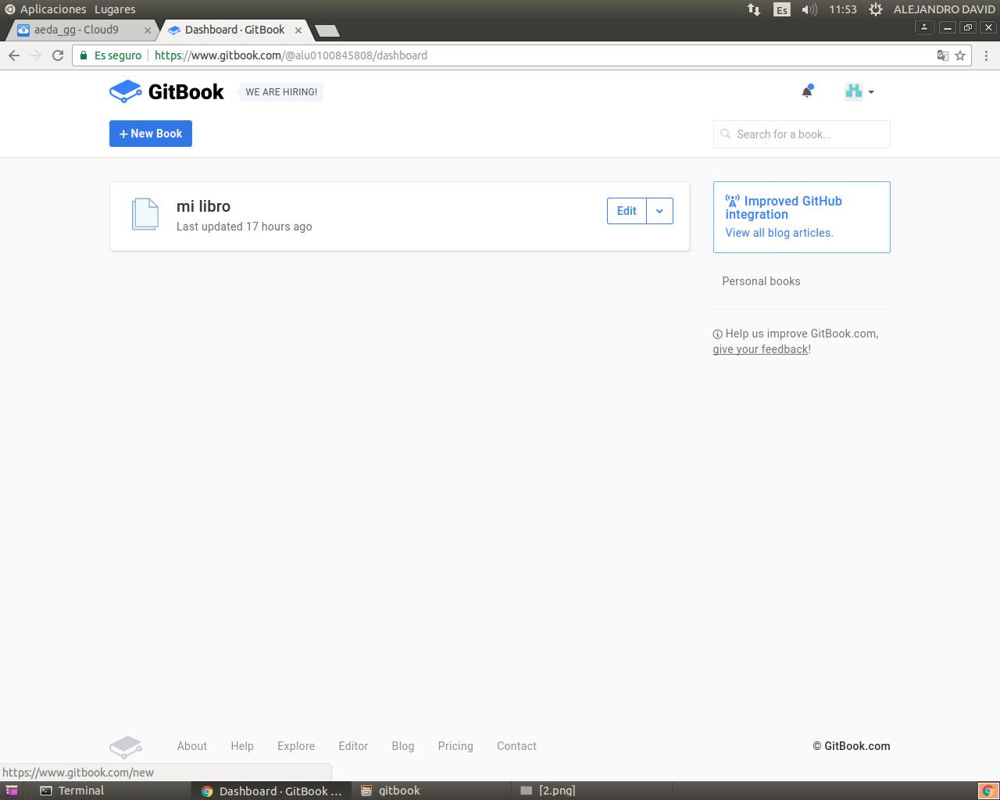
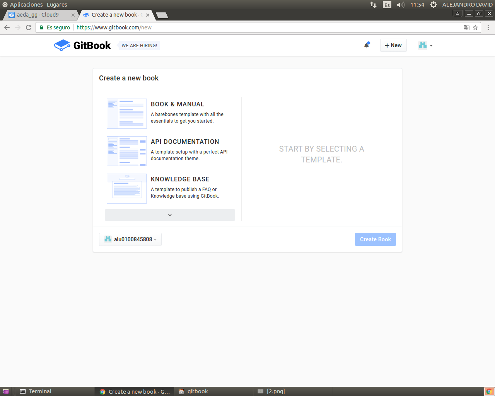
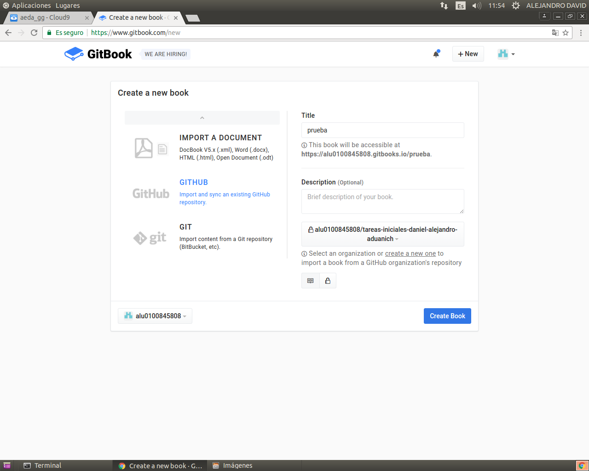

GitBook
¿Qué es Gitbook?
GitBook es una herramienta para crear documentación de proyectos y libros técnicos usando Markdown y Git/Github.
¿Cómo instalarlo?
Para poder instalarlo nesesitamos primero instalar npm con el siguiente comando:
sudo apt-get install npm
Luego de esto ya podemos instalar gitbook con el comando:
npm install gitbook-cli -g
¿Cómo crear un libro?
Para poder crear un libro debemos usar el comando:
gitbook init
Al hacer esto se genera la estructura necesaria para nuestro libro
README.md -> Contiene la introduccion sobre tu libro. SUMMARY.md -> Contiene la tabla de contenidos.
¿Cómo añadir informacion a nuestro libro?
Para añadir datos a nuestro libro lo que debemos hacer es es crear un documento .md con los datos que queremos y linkarlo a SUMMARY. Imaginemos que tenemos esta estructura:
project
│ README.md
│ SUMMARY.md
│
└── GitBook
│ Index.md
El SUMMARY podria ser tal que asi:
# Índice
* [GitBook](GitBook/Index.md)
Una vez añadido esto podemos testear nuestro libro para ello usamos el comando:
gitbook serve
Una vez hecho esto se nos abrira un puerto al cual podremos accederemos via localhost.
¿Cómo añadir un libro a gitbook.com?
Para poder añadir un libro a gitbook lo primero que debemos hacer es entrar en gitbook.com

Una vez hecho esto te logueas con tu cuenta de Github:

Ponemos la opcion New Book que esta en azul:

Una vez ahi pulsas en la flecha debajo KNOWLEDGE BASE:

Y aparecera la siguiente ventana, una vez ahi pulsas en github y rellenas los datos:

Una vez hecho esto ya tendremos nuestro repositorio subido a Gitbook.